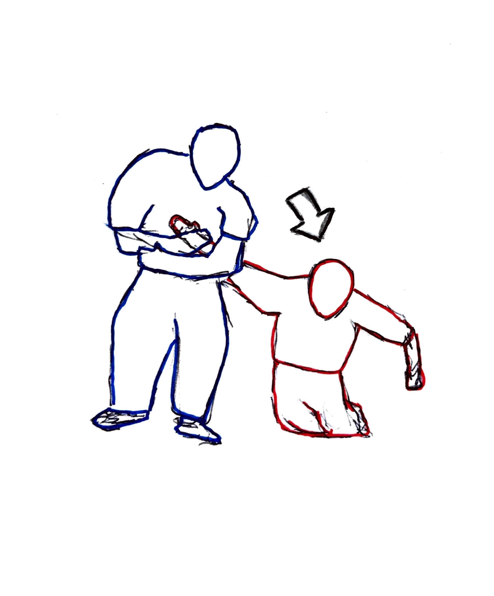

1. El primer paso, como "defensor", es esperar paciente y en posición a que el "atacante" lanze el primer puño. En las palabras de Morihei Ureshiba, "¡No hay necesidad de derribar a alguien que no te ha atacado!"